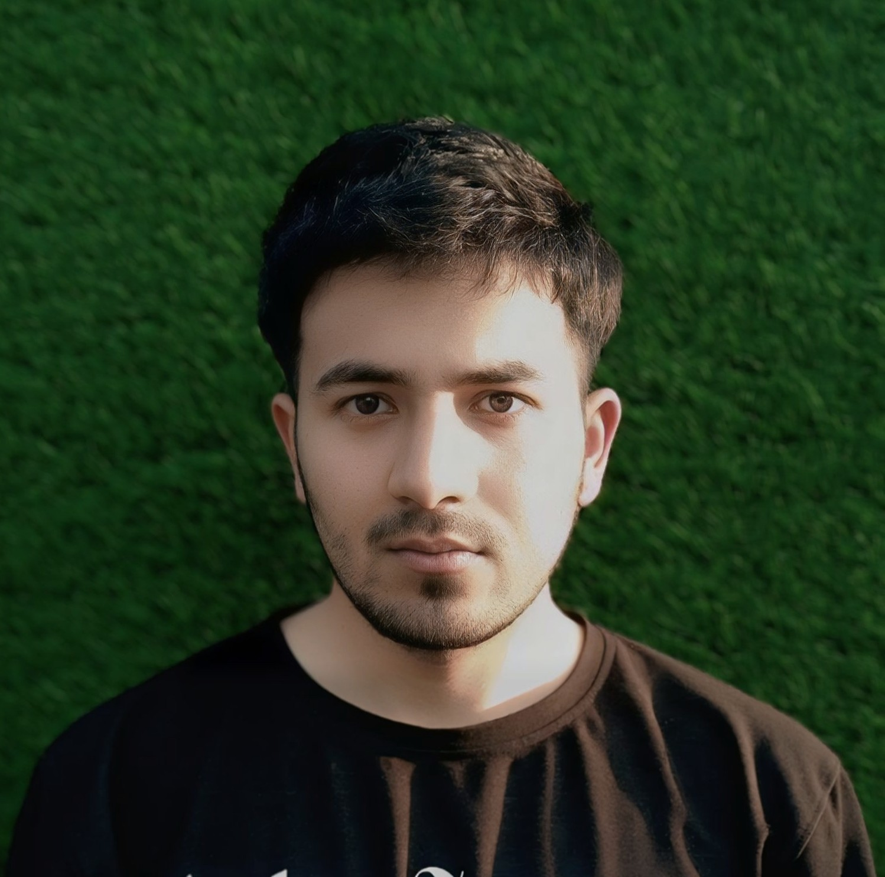

Hi! 👋 I'm Shaheen, a Research Engineer based in India, working on reasoning and thinking models — understanding how large language models perform multi-step reasoning and how training and post-training methods can improve their reliability, efficiency, and scalability.
I study reasoning across the full model development pipeline: from pre-training data composition and architectural choices to the post-training systems that shape model behavior. My primary focus is the post-training stack — supervised fine-tuning (SFT), preference optimization, RL-based training (including RLVR and related approaches), and test-time compute strategies such as agentic scaffolding that enable models to reason more effectively without requiring larger models.
Alongside training methods, I'm interested in the interpretability of reasoning models — studying the internal mechanisms and representations that support multi-step reasoning, and using mechanistic analysis to diagnose failures such as shortcut reasoning, reward hacking, or unfaithful chain-of-thought.
My goal is to build and study systems that make reasoning models more reliable, more efficient, and easier to scale — combining post-training, inference-time reasoning strategies, rigorous evaluation and benchmarking, and mechanistic analysis to better understand how reasoning emerges and how it can be improved in practice.
I contribute to open source through code and writing, and am actively working toward contributions to large-scale LLM infrastructure and post-training frameworks, with a focus on end-to-end implementations of reasoning-focused training pipelines.

Open-source repositories, writing, and models — in lieu of publications.